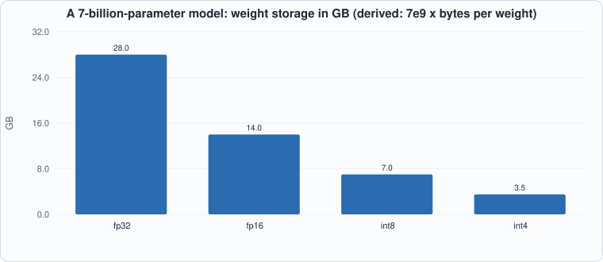
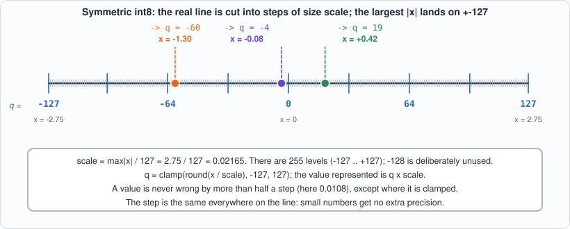
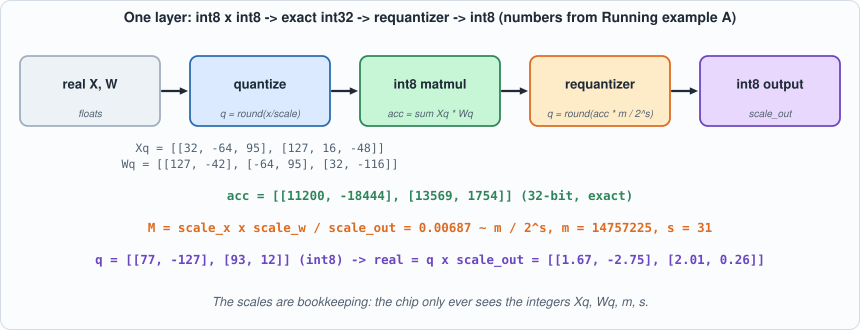
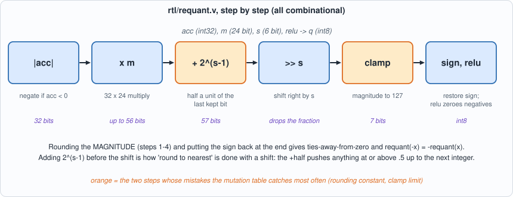
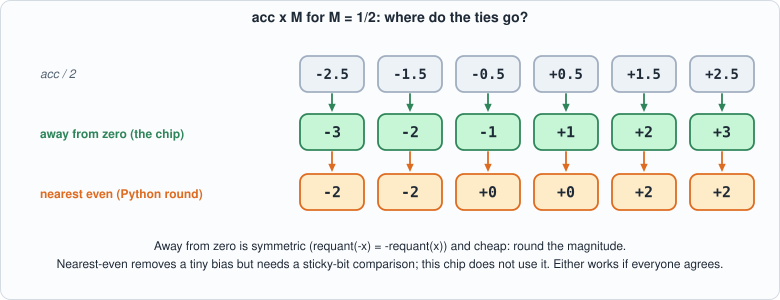
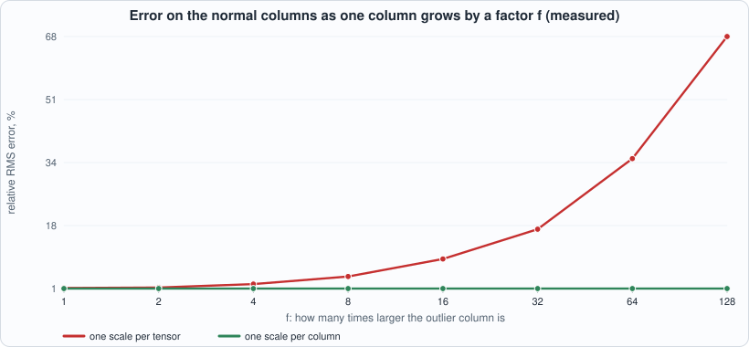
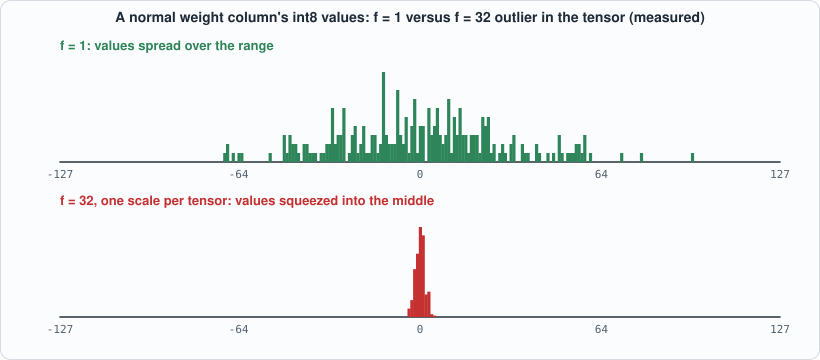

3. Quantization: int8 Numbers, the Requantizer, and What Accuracy It Costs¶
About the animals in this picture and where they are standing
- Siberian ibex (Capra sibirica) lives in the high mountains of Central Asia, from the Altai and Tian Shan to the Himalaya. It is one of the largest ibexes, and the males' ridged horns can exceed a metre in length.
- Alpine ibex (Capra ibex) lives in the European Alps, usually above the tree line on steep rock, and is a famously sure-footed climber. Males carry horns that can reach about a metre. Hunting left only a small remnant, around the Gran Paradiso in Italy, by the early 1800s; reintroductions have since restored it across the Alps.
- West Caucasian tur (Capra caucasica) lives only in the western Caucasus, on steep slopes above the forest line. Its horns are short and heavy, curving outward and back, and it moves up and down cliffs with ease.
- Domestic goat (Capra hircus) descends from the bezoar ibex and is among the oldest domesticated animals. There are on the order of a billion of them, kept for milk, meat, fibre and as pack animals.
- Bezoar ibex (wild goat) (Capra aegagrus) lives from Turkey and the Caucasus through Iran to Pakistan. It is the wild ancestor of the domestic goat, which people began keeping some ten thousand years ago.
The scene is imaginary: it is set on the Moon: gravity about a sixth of Earth's, and an Earth hanging in the black sky. The animals are stylised drawings, shown where they could not live, for effect.
What you will understand: why inference chips compute in 8-bit integers, how a real number becomes an int8 (and why the range is -127..127), how the 32-bit accumulator of a matrix product is brought back to 8 bits by a circuit called the requantizer, and how much accuracy all this costs, measured, including the case where one outlier ruins everything else.
What you need to know first: Chapter 2 (two's complement, the MAC, overflow). Appendix C (number formats) and Appendix D (ML linear algebra) cover the background if either is new.
What this chapter builds: model/quant.py (the arithmetic, in plain integers), rtl/requant.v (the requantizer circuit), model/requant_gold.py and tb/requant_tb.v (its test), tools/mut_ch03.py (mutation), tools/ch03_study.py (the accuracy study), and for the running examples tb/requant_one_tb.v, tools/ch03_example_a.py, tools/ch03_example_b.py.
Why 8 bits¶
Every weight of a model has to be read from memory for every token generated, and memory bandwidth, not arithmetic, usually limits inference (Chapter 9 measures this). An int8 weight is one byte: a quarter of fp32, half of fp16. An int8 multiplier is also far smaller than a floating-point one (Chapter 2: about 400 gates). So the chip stores and multiplies small integers, accumulates in 32 bits, and converts back to 8 bits between layers.

Figure 3.1 (derived): the same model in four formats. Each halving of the format halves the bytes that must stream from memory per token.The price is precision. A real number is not an integer, so converting loses information, and the whole chapter is about converting in a way that loses as little as possible, doing it with simple hardware, and measuring what is lost.
From a real number to an int8, by hand¶
Suppose a layer's activations contain the eight numbers 0.42, -1.30, 2.75, -0.08, 1.91, -2.20, 0.00, 0.66. We have 255 integer levels, -127 to +127, to represent them. The natural plan: stretch the largest magnitude (2.75) to land exactly on the top level, and spread everything else proportionally. The stretch factor is the scale:
scale = max|x| / 127 = 2.75 / 127 = 0.02165
One integer step is worth 0.02165. To store 0.42 you divide by the scale (0.42 / 0.02165 = 19.4) and round (19). To use it later you multiply back (19 x 0.02165 = 0.411): not 0.42 but close, and the error can never exceed half a step (0.0108).

Figure 3.2: symmetric int8. The ticks are the 255 representable values; the real number 0.42 is stored as 19, -1.30 as -60 and -0.08 as -4.Notice the shape of the error: it is the same everywhere, at most half a step, no matter whether the number is big or small. A value like -0.08 is stored with a relative error of 8%, while 2.75 is exact. That is the central trade-off of integer formats, and floating point exists to avoid it (at the cost of larger, slower arithmetic). Running example A below tabulates all eight values.
The scheme: symmetric int8¶
A real number x is stored as an integer q with x ~ q * scale.
scale = max|x| / 127, so the largest value maps to +-127.q = clamp(round(x / scale), -127, 127). The value -128 is never used (Chapter 2): the range is symmetric, so negating a quantized value cannot overflow and a zero-centred distribution loses nothing.- Rounding is to nearest, ties away from zero, done on integers (no floating point in the reference), so every implementation agrees on the half-way cases.
"Symmetric" means the real value 0 maps to the integer 0 and the range is centred on it. The alternative, asymmetric quantization, adds a zero-point offset so that a range like 0..6 can use all 256 levels; it costs extra arithmetic in every product (the offsets multiply out into extra terms), which is why many accelerators, this one included, use the symmetric form and accept losing a bit of range on one-sided data.
A matrix product in int8, and the problem it creates¶
A matrix product of two int8 tensors accumulates exactly in int32 (acc = sum a_q * b_q), and acc represents the real value acc * scale_a * scale_b. That is exact: no rounding has happened yet, and the Chapter 2 MAC does it.
But the accumulator is 32 bits and the next layer wants 8. Handing it a 32-bit number would need four times the memory bandwidth and wider multipliers everywhere downstream, so the accumulator must be shrunk back. This shrinking step is requantization, and it has to choose a new scale for the output, s_out, and rescale every accumulator to it:

Figure 3.3: one layer end to end, with the numbers of Running example A. Only the integers move through the chip; the scales are bookkeeping done by the compiler (Chapter 11).Hardware does not multiply by a real number. It uses an integer mantissa m (24 bits, 2^23 <= m < 2^24) and a shift s: M ~ m / 2^s, so q_out = clamp(round(acc * m / 2^s)). This is a floating-point number in disguise (the mantissa has 24 bits of precision and the shift is the exponent), but evaluated entirely with an integer multiply and a shift. The relative error of that approximation is at most 2^-24 (measured below).
The reference: model/quant.py¶
#!/usr/bin/env python3
"""Chapter 3: the quantization arithmetic, in plain Python integers, exactly as the hardware must do it, plus the helpers that choose scales and measure error.
THE SCHEME (symmetric int8, the one most inference chips use): a real number x is stored as an integer q in [-127, 127] with x ~ q * scale. The value -128 is never used, so that negating a value can never overflow and the range is symmetric about zero.
quantize(x, scale) q = clamp(round_half_away(x / scale), -127, 127)
scale from data scale = max|x| / 127 (per tensor, or per row/channel)
A matrix product of two int8 tensors accumulates in int32: acc = sum a_q * b_q and represents the real value acc * (scale_a * scale_b).
REQUANTIZATION turns that int32 accumulator back into an int8 for the next layer, with output scale s_out: q_out = round_half_away(acc * M), M = scale_a * scale_b / s_out
M is a real number, usually between 2^-16 and 1. Hardware does not multiply by a real number; it multiplies by an integer MANTISSA m (24 bits, 2^23 <= m < 2^24) and shifts right by s: M ~ m / 2^s, q_out = clamp(round_half_away(acc * m / 2^s), -127, 127), optionally clamped at 0 from below (a fused ReLU).
"""
import math, random
QMIN, QMAX = -127, 127
def round_half_away(num, den):
"""round(num / den) to the nearest integer, ties away from zero, for integers (den > 0), with no floating point."""
q, r = divmod(abs(num), den); q += (2 * r >= den); return q if num >= 0 else -q
def clamp(v, lo, hi): return max(lo, min(hi, v))
def quantize(x, scale): return clamp(round_half_away_float(x / scale), QMIN, QMAX)
def round_half_away_float(v): return int(math.floor(abs(v) + 0.5)) * (1 if v >= 0 else -1)
def scale_for(values): m = max(abs(v) for v in values); return m / QMAX if m > 0 else 1.0
def mantissa_shift(M):
"""Represent a positive real M as (m, s) with 2^23 <= m < 2^24 and M ~ m / 2^s (s in 16..47 for the ranges we care about)."""
assert M > 0
s = 23 - math.floor(math.log2(M)); m = round(M * (1 << s))
if m >= 1 << 24: m >>= 1; s -= 1
assert (1 << 23) <= m < (1 << 24); return m, s
def requant(acc, m, s, relu=False):
"""The hardware's function: the int32 accumulator, a 24-bit mantissa and a shift, to an int8 in [-127, 127] (or [0, 127] with relu)."""
q = round_half_away(acc * m, 1 << s); return clamp(q, 0 if relu else QMIN, QMAX)
def matmul_int8(A, B):
"""A: n x k, B: k x p, int8 -> n x p int32 (exact)."""
return [[sum(A[i][t] * B[t][j] for t in range(len(B))) for j in range(len(B[0]))] for i in range(len(A))]
round_half_away works on integers only (divmod, then compare twice the remainder with the denominator). requant is the function the circuit has to match, bit for bit.
The circuit: rtl/requant.v¶
// Chapter 3: the requantizer. It turns the int32 accumulator of a matrix product back into an int8 for the next layer:
// q = clamp( round_half_away( acc * m / 2^s ), -127, 127 ) (clamped at 0 from below when relu = 1)
// m is a 24-bit mantissa, s a shift of 0 to 63. Rounding is to nearest with ties away from zero, done on the magnitude so that the result is symmetric: requant(-x) = -requant(x).
// Combinational: one 32 x 24 multiplier, one adder for the rounding constant, a shifter and a clamp.
module requant(input signed [31:0] acc, input [23:0] m, input [5:0] s, input relu, output signed [7:0] q);
wire neg = acc[31];
wire [31:0] mag = neg ? (~acc + 32'd1) : acc; // |acc| (2^31 fits in 32 unsigned bits)
wire [55:0] prod = mag * m; // up to 2^31 * 2^24 = 2^55
wire [55:0] half = (s == 6'd0) ? 56'd0 : (56'd1 << (s - 6'd1)); // 2^(s-1): half a unit in the last place kept
wire [56:0] sum = {1'b0, prod} + {1'b0, half};
wire [56:0] shifted = sum >> s; // |result| before the clamp
wire [56:0] limit = 57'd127;
wire [6:0] mag_q = (shifted > limit) ? 7'd127 : shifted[6:0]; // clamp the magnitude at 127
wire signed [7:0] signed_q = neg ? -$signed({1'b0, mag_q}) : $signed({1'b0, mag_q});
assign q = (relu && signed_q[7]) ? 8'sd0 : signed_q;
endmodule

Figure 3.4: the datapath ofrequant. The two orange steps (the rounding constant and the clamp) are where the interesting bugs live.
It is combinational (no clock): take the magnitude of acc, multiply by m (32 x 24 bits gives up to 56 bits), add the rounding constant 2^(s-1), shift right by s, clamp the magnitude to 127, restore the sign, and optionally clamp negatives to zero (a fused ReLU). Why add 2^(s-1) and then shift? Shifting right by s is division by 2^s that rounds down. Adding half of 2^s first turns "round down" into "round to nearest": a remainder of 0.5 or more carries into the next integer, a smaller one does not. Rounding the magnitude gives ties-away-from-zero for both signs, and makes requant(-x) = -requant(x). A 2^31 magnitude fits in 32 unsigned bits, so the most negative accumulator is not special.

Figure 3.5: the half-way cases. Python'sround goes to the nearest even number and the chip goes away from zero; the book's rule is that the reference and the circuit use the same one, and here that is away from zero.
The answer key and the testbench¶
#!/usr/bin/env python3
"""Chapter 3: golden vectors for the requantizer. Directed cases (the accumulator at both ends of int32, exact ties at .5 in both signs, mantissas at both ends, shifts at both ends, results exactly at the clamp limits, zero) and random ones.
The FIRST line is the number of cases that follow. Each following line: {acc[31:0], m[23:0], s[5:0], relu, q[7:0]} = 32 + 24 + 6 + 1 + 8 = 71 bits as 18 hex digits (the top digit holds 3 bits). Usage: requant_gold.py OUTFILE [COUNT]"""
import os, random, sys
sys.path.insert(0, os.path.dirname(os.path.abspath(__file__))); from quant import requant
count = int(sys.argv[2]) if len(sys.argv) > 2 else 200000; R = random.Random(3); rows = []
def add(acc, m, s, relu):
q = requant(acc, m, s, bool(relu)); rows.append(((acc & 0xFFFFFFFF) << 39) | (m << 15) | (s << 9) | (relu << 8) | (q & 255))
EX = [0, 1, -1, 2, -2, 127, -127, 128, -128, 2**31 - 1, -2**31, 2**30, -2**30, 12345, -12345, 99999999, -99999999]
for acc in EX:
for m in (1 << 23, (1 << 24) - 1, 12345678, 0xAAAAAA):
for s in (16, 23, 24, 31, 39, 47, 63):
for relu in (0, 1): add(acc, m, s, relu)
for s in range(0, 64): # exact ties: acc * m = (2k + 1) * 2^(s-1), so the true quotient is k + 1/2
for k in (0, 1, 2, 5, 63, 126, 127, 200):
if s >= 1:
m = 1 << 23; prod = (2 * k + 1) << (s - 1)
if prod % m == 0:
acc = prod // m
if -2**31 <= acc < 2**31:
for sg in (1, -1):
for relu in (0, 1): add(sg * acc, m, s, relu)
for _ in range(count):
s = R.randrange(0, 64); m = R.randrange(1 << 23, 1 << 24); acc = R.choice([R.randrange(-2**31, 2**31), R.randrange(-2**20, 2**20), R.randrange(-300, 300) * (1 << R.randrange(0, 16))])
add(max(-2**31, min(2**31 - 1, acc)), m, s, R.randrange(2))
open(sys.argv[1], "w").write("%018x\n" % len(rows) + "\n".join("%018x" % r for r in rows) + "\n"); print(len(rows), "requantization cases written to", sys.argv[1])
// Chapter 3: the requantizer against the golden vectors (directed corner cases and 200,000 random ones).
`timescale 1ns/1ps
module requant_tb;
reg signed [31:0] acc; reg [23:0] m; reg [5:0] s; reg relu; wire signed [7:0] q;
requant dut(.acc(acc), .m(m), .s(s), .relu(relu), .q(q));
reg [71:0] vec [0:1048575]; integer i, bad, n, nrows; reg [71:0] v;
initial begin
$readmemh("out/requant_vectors.hex", vec); bad = 0;
nrows = vec[0];
for (i = 1; i <= nrows; i = i + 1) begin
v = vec[i]; acc = v[70:39]; m = v[38:15]; s = v[14:9]; relu = v[8]; #1; n = i;
if (q !== v[7:0]) begin bad = bad + 1; if (bad <= 5) $display("MISMATCH acc=%0d m=%0d s=%0d relu=%0d: got %0d want %0d", acc, m, s, relu, q, $signed(v[7:0])); end
end
if (bad == 0) $display("PASS: the requantizer matches the golden model on all %0d cases", n); else begin $display("FAIL: %0d of %0d cases differ", bad, n); $fatal(1, "requant failed"); end
$finish;
end
endmodule
The key has 201,808 cases: the accumulator at both ends of int32, mantissas at both ends, shifts 0 and 63, exact ties at every shift (built so that acc * m is exactly (2k+1) * 2^(s-1)), results sitting exactly at the clamp limit, and 200,000 random ones, with two thirds of them having small accumulators (below about 2^20 or a few hundred times a power of two) so that the interesting rounding region is exercised.
Running it¶
#!/usr/bin/env python3
"""Chapter 3: the requantizer through the flow: golden vectors, two simulators, Yosys cost. Usage: ch03_run.py"""
import os, subprocess, sys
sys.path.insert(0, os.path.dirname(os.path.abspath(__file__))); import hw
print("== 1. the golden model writes its vectors")
print(subprocess.run([sys.executable, "model/requant_gold.py", "out/requant_vectors.hex"], cwd=hw.ROOT, capture_output=True, text=True).stdout.strip())
F = ["rtl/requant.v", "tb/requant_tb.v"]
for name, fn in (("Icarus Verilog", hw.sim_icarus), ("Verilator", hw.sim_verilator)):
rc, out = fn(F, "requant_tb"); print(f"\n== 2. requant_tb in {name}")
print(([l for l in out.strip().splitlines() if l.startswith(("PASS", "FAIL", "MISMATCH"))] or out.strip().splitlines()[-3:])[0], f"(exit status {rc})")
print("\n== 3. Yosys: what the requantizer costs")
GATES = "abc -g AND,NAND,OR,NOR,XOR,XNOR,ANDNOT,ORNOT,MUX; opt_clean; stat"
g = hw.synth_stats(["rtl/requant.v"], "requant", f"synth -flatten -top requant; {GATES}"); l = hw.synth_stats(["rtl/requant.v"], "requant", "synth_ice40 -flatten -top requant; stat")
print(f"requant generic gates {g['total']:5d}\n iCE40 cells {l['total']:5d} {dict(sorted(l['cells'].items()))}")
Output (cloud sandbox -- live-executed; Icarus Verilog 12.0, Verilator 5.020, Yosys 0.33)
== 1. the golden model writes its vectors
201808 requantization cases written to out/requant_vectors.hex
== 2. requant_tb in Icarus Verilog
PASS: the requantizer matches the golden model on all 201808 cases (exit status 0)
== 2. requant_tb in Verilator
PASS: the requantizer matches the golden model on all 201808 cases (exit status 0)
== 3. Yosys: what the requantizer costs
requant generic gates 5322
iCE40 cells 2777 {'SB_CARRY': 138, 'SB_LUT4': 2639}
Both simulators agree with the key on all 201,808 cases. The requantizer is 5,322 generic gates / 2,777 iCE40 cells (measured), about thirteen times a Chapter 2 multiplier. It is a large block for what it does, mostly because of the 32 x 24 multiply; a real design would share one requantizer per row of outputs, or pipeline it. (Not measured here: speed.)
Running example A: quantize by hand, then run a whole layer¶
The point of this example: to do every step of this chapter once, with numbers small enough to check by eye, and to confirm the circuit gives the same answers as the software.
// Chapter 3, running example A: run the requantizer on a few hand-chosen cases given on the command line (+acc=, +m=, +s=, +relu=) and print the result. Combinational circuit, so one #1 is enough.
`timescale 1ns/1ps
module requant_one_tb;
reg signed [31:0] acc; reg [23:0] m; reg [5:0] s; reg relu; wire signed [7:0] q; integer a, mi, si, ri;
requant dut (.acc(acc), .m(m), .s(s), .relu(relu), .q(q));
initial begin
if (!$value$plusargs("acc=%d", a) || !$value$plusargs("m=%d", mi) || !$value$plusargs("s=%d", si) || !$value$plusargs("relu=%d", ri)) begin $display("usage: +acc= +m= +s= +relu="); $finish; end
acc = a; m = mi; s = si; relu = ri; #1; $display("Q %0d", q); $finish;
end
endmodule
#!/usr/bin/env python3
"""Chapter 3, running example A: quantize by hand. (1) one vector of real numbers to int8 and back; (2) a complete tiny layer: real X and W -> int8 -> int32 accumulators -> requantizer (mantissa and shift, checked on the real circuit in Icarus) -> int8 -> back to real, against the real answer. Usage: ch03_example_a.py"""
import os, subprocess, sys
sys.path.insert(0, os.path.dirname(os.path.abspath(__file__))); import hw
sys.path.insert(0, os.path.join(hw.ROOT, "model")); from quant import quantize, scale_for, mantissa_shift, requant, matmul_int8
R = hw.ROOT
x = [0.42, -1.30, 2.75, -0.08, 1.91, -2.20, 0.00, 0.66]
sc = scale_for(x)
print("== 1. one vector. scale = max|x| / 127 = %.2f / 127 = %.6f (one int8 step is worth %.6f)" % (max(abs(v) for v in x), sc, sc))
print(" x x/scale q (rounded) q*scale error")
tot = 0
for v in x:
q = quantize(v, sc); b = q * sc; tot += abs(b - v)
print(f" {v:6.2f} {v/sc:9.3f} {q:6d} {b:7.4f} {b-v:+.5f}")
print(f" largest possible error is half a step = {sc/2:.6f}; the largest error here is {max(abs(quantize(v, sc)*sc - v) for v in x):.6f}. The value 2.75 (the maximum) is exact by construction.")
print("\n== 2. a complete tiny layer: Y = X W, X is 2x3, W is 3x2")
X = [[0.5, -1.0, 1.5], [2.0, 0.25, -0.75]]; W = [[1.2, -0.4], [-0.6, 0.9], [0.3, -1.1]]
Yreal = [[sum(X[i][t] * W[t][j] for t in range(3)) for j in range(2)] for i in range(2)]
sx = scale_for([v for r in X for v in r]); sw = scale_for([v for r in W for v in r])
Xq = [[quantize(v, sx) for v in r] for r in X]; Wq = [[quantize(v, sw) for v in r] for r in W]
print(f" scale_x = 2.0/127 = {sx:.6f}, scale_w = 1.2/127 = {sw:.6f}")
print(" Xq =", Xq); print(" Wq =", Wq)
acc = matmul_int8(Xq, Wq); print(" int32 accumulators acc = Xq Wq =", acc, " (exact integer arithmetic, no rounding yet)")
print(" real value of an accumulator = acc * scale_x * scale_w:")
for i in range(2): print(" row", i, [f"{acc[i][j]*sx*sw:.4f}" for j in range(2)], " real answer", [f"{v:.4f}" for v in Yreal[i]])
so = scale_for([v for r in Yreal for v in r]); M = sx * sw / so; m, s = mantissa_shift(M)
print(f"\n the output will be int8 too: scale_out = max|Y| / 127 = {max(abs(v) for r in Yreal for v in r):.4f} / 127 = {so:.6f}")
print(f" so each accumulator must be multiplied by M = scale_x * scale_w / scale_out = {M:.8f}")
print(f" as a mantissa and shift: M ~ m / 2^s with m = {m} (a 24-bit number, between 2^23 = 8388608 and 2^24 = 16777216) and s = {s}; m/2^s = {m/2**s:.8f}")
print("\n requantizer, one accumulator at a time: software reference vs the real circuit (Icarus)")
subprocess.run(["iverilog", "-g2012", "-s", "requant_one_tb", "-o", "/tmp/rq1.vvp", "rtl/requant.v", "tb/requant_one_tb.v"], cwd=R, capture_output=True, check=True)
ok = True; Yq = []
print(" acc acc*M software q circuit q real value q*scale_out real answer")
for i in range(2):
row = []
for j in range(2):
a = acc[i][j]; sw_q = requant(a, m, s, False)
out = subprocess.run(["vvp", "-n", "/tmp/rq1.vvp", f"+acc={a}", f"+m={m}", f"+s={s}", "+relu=0"], cwd=R, capture_output=True, text=True).stdout
hw_q = int([l for l in out.splitlines() if l.startswith("Q ")][0].split()[1]); ok &= hw_q == sw_q; row.append(hw_q)
print(f" {a:5d} {a*M:9.3f} {sw_q:8d} {hw_q:8d} {hw_q*so:9.4f} {Yreal[i][j]:9.4f}")
Yq.append(row)
err = max(abs(Yq[i][j] * so - Yreal[i][j]) for i in range(2) for j in range(2))
print(f"\n circuit and software agree on all four: {ok}. Largest error against the real answer: {err:.4f} (about {err/so:.2f} output steps). Most of it was already present in the accumulators, which came from rounded INPUTS (compare the two lines above); the requantizer itself adds at most half an output step.")
print("\n== 3. ties and signs: what 'round half away from zero' does (M = 1/2, so acc*M = acc/2; m = 2^23, s = 24)")
print(" acc acc*M away from zero to nearest even circuit")
subprocess.run(["iverilog", "-g2012", "-s", "requant_one_tb", "-o", "/tmp/rq1.vvp", "rtl/requant.v", "tb/requant_one_tb.v"], cwd=R, capture_output=True, check=True)
for a in (-5, -3, -1, 1, 3, 5):
hwq = int([l for l in subprocess.run(["vvp", "-n", "/tmp/rq1.vvp", f"+acc={a}", f"+m={1<<23}", "+s=24", "+relu=0"], cwd=R, capture_output=True, text=True).stdout.splitlines() if l.startswith("Q ")][0].split()[1])
ok &= hwq == requant(a, 1 << 23, 24); print(f" {a:3d} {a/2:5.1f} {requant(a, 1<<23, 24):10d} {round(a/2):10d} {hwq:6d}")
print(" (Python's round() goes to the nearest EVEN number: 0.5 -> 0, 2.5 -> 2. The chip goes AWAY from zero, symmetrically: 0.5 -> 1, -0.5 -> -1, 2.5 -> 3. Both are fine; they must simply be the same everywhere.)")
sys.exit(0 if ok else 1)
To compile and run: python3 tools/ch03_example_a.py (it needs iverilog).
Output (cloud sandbox -- live-executed)
== 1. one vector. scale = max|x| / 127 = 2.75 / 127 = 0.021654 (one int8 step is worth 0.021654)
x x/scale q (rounded) q*scale error
0.42 19.396 19 0.4114 -0.00858
-1.30 -60.036 -60 -1.2992 +0.00079
2.75 127.000 127 2.7500 +0.00000
-0.08 -3.695 -4 -0.0866 -0.00661
1.91 88.207 88 1.9055 -0.00449
-2.20 -101.600 -102 -2.2087 -0.00866
0.00 0.000 0 0.0000 +0.00000
0.66 30.480 30 0.6496 -0.01039
largest possible error is half a step = 0.010827; the largest error here is 0.010394. The value 2.75 (the maximum) is exact by construction.
== 2. a complete tiny layer: Y = X W, X is 2x3, W is 3x2
scale_x = 2.0/127 = 0.015748, scale_w = 1.2/127 = 0.009449
Xq = [[32, -64, 95], [127, 16, -48]]
Wq = [[127, -42], [-64, 95], [32, -116]]
int32 accumulators acc = Xq Wq = [[11200, -18444], [13569, 1754]] (exact integer arithmetic, no rounding yet)
real value of an accumulator = acc * scale_x * scale_w:
row 0 ['1.6666', '-2.7445'] real answer ['1.6500', '-2.7500']
row 1 ['2.0191', '0.2610'] real answer ['2.0250', '0.2500']
the output will be int8 too: scale_out = max|Y| / 127 = 2.7500 / 127 = 0.021654
so each accumulator must be multiplied by M = scale_x * scale_w / scale_out = 0.00687187
as a mantissa and shift: M ~ m / 2^s with m = 14757225 (a 24-bit number, between 2^23 = 8388608 and 2^24 = 16777216) and s = 31; m/2^s = 0.00687187
requantizer, one accumulator at a time: software reference vs the real circuit (Icarus)
acc acc*M software q circuit q real value q*scale_out real answer
11200 76.965 77 77 1.6673 1.6500
-18444 -126.745 -127 -127 -2.7500 -2.7500
13569 93.244 93 93 2.0138 2.0250
1754 12.053 12 12 0.2598 0.2500
circuit and software agree on all four: True. Largest error against the real answer: 0.0173 (about 0.80 output steps). Most of it was already present in the accumulators, which came from rounded INPUTS (compare the two lines above); the requantizer itself adds at most half an output step.
== 3. ties and signs: what 'round half away from zero' does (M = 1/2, so acc*M = acc/2; m = 2^23, s = 24)
acc acc*M away from zero to nearest even circuit
-5 -2.5 -3 -2 -3
-3 -1.5 -2 -2 -2
-1 -0.5 -1 0 -1
1 0.5 1 0 1
3 1.5 2 2 2
5 2.5 3 2 3
(Python's round() goes to the nearest EVEN number: 0.5 -> 0, 2.5 -> 2. The chip goes AWAY from zero, symmetrically: 0.5 -> 1, -0.5 -> -1, 2.5 -> 3. Both are fine; they must simply be the same everywhere.)
Walkthrough.
- Part 1, one vector. Every row follows the rule from "From a real number to an int8": divide, round, multiply back. The largest value, 2.75, comes back exactly, as promised. The rest differ from the originals by less than half a step (0.0108): the largest error here, 0.0104, is on 0.66. The value -0.08 comes back as -0.0866: absolute error small, relative error 8%.
- Part 2, a whole layer.
XandWare real 2x3 and 3x2 matrices. Each gets its own scale (2.0/127 and 1.2/127), is quantized, and the integers are multiplied:acc = [[11200, -18444], [13569, 1754]]. These are exact integer results. Multiplying them byscale_x x scale_w(the first two output lines) already gives values close to the real answer (1.6666 vs 1.6500, for instance); the difference is the error of rounding the inputs. - The requantizer. The output scale is chosen from the real answer's range (2.75 / 127). Then
M = scale_x x scale_w / scale_out = 0.00687becomes a 24-bit mantissa and a shift. Each accumulator times M lands on the output grid: 76.965 becomes 77, -126.745 becomes -127, 93.244 becomes 93, 12.053 becomes 12. The circuit and the software agree on all four. - The real answer. The final column shows
q x scale_outnext to the true value: 1.6673 versus 1.6500 and so on. The largest error is 0.0173, about 0.8 of an output step. An int8 layer is an approximation of the real layer; this is what the approximation looks like in a case small enough to see. - Part 3, ties. The six rows with
M = 1/2show every accumulator that lands exactly half-way. The chip rounds away from zero in both directions (+0.5 goes to 1, -0.5 goes to -1), Python'sroundto the nearest even number. Neither is wrong; the book needs them to be the same everywhere and picks the one that is symmetric and cheap.
Running example B: the outlier experiment, taken apart¶
The point of this example: the 19.5% figure in the accuracy table below is dramatic enough that it deserves explaining. Here the experiment is repeated for a sweep of outlier sizes, and we look at why the error grows by counting how many of the 255 levels the normal columns actually use.
#!/usr/bin/env python3
"""Chapter 3, running example B: the outlier experiment, taken apart. A 32 x 256 activation matrix times a 256 x 32 weight matrix, one weight column made `f` times larger than the others. For a sweep of f, the relative RMS error on the NORMAL columns with one scale for the whole tensor and with one scale per column; plus the histogram of how many of the 255 int8 levels a normal column actually uses. Writes out/ch03_example_b.json for the figures. Usage: ch03_example_b.py"""
import json, math, os, random, sys
sys.path.insert(0, os.path.dirname(os.path.abspath(__file__))); import hw
sys.path.insert(0, os.path.join(hw.ROOT, "model")); from quant import quantize, scale_for, matmul_int8
R = random.Random(21); N, K, P = 32, 256, 32
def rms(v): return math.sqrt(sum(x * x for x in v) / len(v))
X = [[R.gauss(0, 1) for _ in range(K)] for _ in range(N)]; W0 = [[R.gauss(0, 1) for _ in range(P)] for _ in range(K)]
sx = scale_for([v for r in X for v in r]); Xq = [[quantize(v, sx) for v in r] for r in X]
def run(f, per_col):
W = [[v * (f if j == 0 else 1) for j, v in enumerate(r)] for r in W0]; cols = list(zip(*W))
sw = [scale_for(c) for c in cols] if per_col else [scale_for([v for r in W for v in r])] * P
Wq = [[quantize(W[t][j], sw[j]) for j in range(P)] for t in range(K)]; acc = matmul_int8(Xq, Wq)
err = []; ref = []
for i in range(N):
for j in range(1, P):
e = sum(X[i][t] * W[t][j] for t in range(K)); err.append(acc[i][j] * sx * sw[j] - e); ref.append(e)
used = len({Wq[t][1] for t in range(K)}) # how many distinct int8 values does column 1 (a NORMAL column) use?
return rms(err) / rms(ref), used, Wq
FS = [1, 2, 4, 8, 16, 32, 64, 128]; res = {"f": FS, "tensor": [], "column": [], "levels_tensor": [], "levels_column": []}
print(f"X is {N} x {K}, W is {K} x {P}, Gaussian, seed 21; column 0 of W is multiplied by f. Error is measured on columns 1..{P-1} only (the normal ones).\n")
print(" f | per-tensor error | per-column error | distinct int8 levels used by a normal column: per-tensor / per-column")
for f in FS:
et, ut, _ = run(f, False); ec, uc, _ = run(f, True)
res["tensor"].append(et); res["column"].append(ec); res["levels_tensor"].append(ut); res["levels_column"].append(uc)
print(f"{f:4d} | {et*100:15.2f}% | {ec*100:15.2f}% | {ut:4d} / {uc:4d}")
_, _, Wq = run(32, False)
hist = {}
for t in range(K): hist[Wq[t][1]] = hist.get(Wq[t][1], 0) + 1
res["hist32"] = sorted(hist.items()); _, _, Wq1 = run(1, False); h1 = {}
for t in range(K): h1[Wq1[t][1]] = h1.get(Wq1[t][1], 0) + 1
res["hist1"] = sorted(h1.items())
print(f"\nfor f = 32, per-tensor: column 1 has {K} weights and they land on only {len(hist)} distinct int8 values, between {min(hist)} and {max(hist)}; with f = 1 they spread over {len(h1)} values, {min(h1)}..{max(h1)}.")
print("each weight's rounding error is at most half a step; the step is set by the OUTLIER, so it is f times larger than the normal column needs.")
print("\nreading the sweep: the per-column error stays near 1.2% whatever f is (each column is scaled to itself). The per-tensor error grows about linearly with f once f is large,")
print("because the step size is about f times coarser than the normal columns need: that is exactly the cost of using one scale for a tensor whose columns differ in size.")
json.dump(res, open(os.path.join(hw.ROOT, "out", "ch03_example_b.json"), "w"))
To compile and run: python3 tools/ch03_example_b.py (pure Python; runs in about a second).
Output (cloud sandbox -- live-executed)
X is 32 x 256, W is 256 x 32, Gaussian, seed 21; column 0 of W is multiplied by f. Error is measured on columns 1..31 only (the normal ones).
f | per-tensor error | per-column error | distinct int8 levels used by a normal column: per-tensor / per-column
1 | 1.30% | 1.15% | 102 / 118
2 | 1.42% | 1.15% | 96 / 118
4 | 2.32% | 1.15% | 57 / 118
8 | 4.32% | 1.15% | 33 / 118
16 | 8.93% | 1.15% | 19 / 118
32 | 16.77% | 1.15% | 10 / 118
64 | 35.35% | 1.15% | 6 / 118
128 | 67.50% | 1.15% | 3 / 118
for f = 32, per-tensor: column 1 has 256 weights and they land on only 10 distinct int8 values, between -4 and 5; with f = 1 they spread over 102 values, -69..96.
each weight's rounding error is at most half a step; the step is set by the OUTLIER, so it is f times larger than the normal column needs.
reading the sweep: the per-column error stays near 1.2% whatever f is (each column is scaled to itself). The per-tensor error grows about linearly with f once f is large,
because the step size is about f times coarser than the normal columns need: that is exactly the cost of using one scale for a tensor whose columns differ in size.

Figure 3.6 (measured): the per-column error is flat at about 1.2%; the per-tensor error climbs steadily as the outlier grows.
Figure 3.7 (measured): the same column of weights. With no outlier it uses 102 distinct levels; with one outlier 32 times larger in the tensor and one scale for the whole tensor, it uses 10.Walkthrough.
- The setup. Weights are Gaussian; one of the 32 output columns is multiplied by
f. We measure the error only on the other 31 columns, the ones nothing is wrong with. - The numbers. With per-column scales the error is 1.15% at every
f, as it should be: each column is quantized to its own range and cannot see the outlier. With a single per-tensor scale the error is 1.30% atf= 1, 4.3% atf= 8, 16.8% atf= 32 and 67.5% atf= 128. - The mechanism. A tensor's scale is
max|x| / 127. Once the outlier column is 32 times larger than the others, the step is about 32 times larger than a normal column needs, so a normal column's 256 weights land on only 10 distinct integers (between -4 and 5). Figure 3.7 shows the effect as a picture. Weights that differ by up to a step become equal; the information is lost at the moment of quantization and no later stage can recover it. - The lesson. The per-tensor scale is cheap (one number) and fine when a tensor is homogeneous. When columns differ in size, per-column (per-channel) scales are the standard repair, and they cost one extra number per column and a per-column mantissa in the requantizer. Real systems also treat outlier channels specially, which this book does not model.
Testing the tests¶
#!/usr/bin/env python3
"""Chapter 3: test the tests. Break the requantizer one line at a time; every real mutant must be caught. Equivalent mutants are reported separately."""
import os, sys
sys.path.insert(0, os.path.dirname(os.path.abspath(__file__))); import hw
R = "rtl/requant.v"
M = [
(R, "rounding constant left out (truncate)", "wire [56:0] sum = {1'b0, prod} + {1'b0, half};", "wire [56:0] sum = {1'b0, prod};"),
(R, "rounding constant is 2^s instead of 2^(s-1)", "(56'd1 << (s - 6'd1))", "(56'd1 << s)"),
(R, "clamp removed (low 7 bits kept)", "wire [6:0] mag_q = (shifted > limit) ? 7'd127 : shifted[6:0];", "wire [6:0] mag_q = shifted[6:0];"),
(R, "clamp returns 126", "? 7'd127 : shifted[6:0]", "? 7'd126 : shifted[6:0]"),
(R, "clamp at 128 (allows -128)", "wire [56:0] limit = 57'd127;", "wire [56:0] limit = 57'd128;"),
(R, "rounding done on the signed value (floor), not the magnitude", "wire [31:0] mag = neg ? (~acc + 32'd1) : acc;", "wire [31:0] mag = acc;"),
(R, "negative sign not restored", "wire signed [7:0] signed_q = neg ? -$signed({1'b0, mag_q}) : $signed({1'b0, mag_q});", "wire signed [7:0] signed_q = $signed({1'b0, mag_q});"),
(R, "relu ignored", "assign q = (relu && signed_q[7]) ? 8'sd0 : signed_q;", "assign q = signed_q;"),
(R, "relu always on", "assign q = (relu && signed_q[7]) ? 8'sd0 : signed_q;", "assign q = signed_q[7] ? 8'sd0 : signed_q;"),
(R, "mantissa truncated to 23 bits", "wire [55:0] prod = mag * m;", "wire [55:0] prod = mag * {1'b0, m[22:0]};"),
(R, "product truncated to 48 bits", "wire [55:0] prod = mag * m;", "wire [55:0] prod = (mag * m) & 56'hFFFFFFFFFFFF;"),
(R, "shift amount off by one", "wire [56:0] shifted = sum >> s;", "wire [56:0] shifted = sum >> (s + 6'd1);"),
(R, "shift uses only 5 bits", "wire [56:0] shifted = sum >> s;", "wire [56:0] shifted = sum >> s[4:0];"),
(R, "most negative accumulator not handled (magnitude as 31 bits)", "wire [31:0] mag = neg ? (~acc + 32'd1) : acc;", "wire [31:0] mag = neg ? {1'b0, (~acc[30:0] + 31'd1)} : acc;"),
(R, "ties round toward zero (rounding constant minus one)", "{1'b0, half};", "{1'b0, half} - 57'd1;"),
]
EQUIV = [
(R, "EQUIVALENT: shift of 0 adds a half (1 << 63 is cut to 0 by the 56-bit wire)", "(s == 6'd0) ? 56'd0 :", ""),
(R, "EQUIVALENT: clamp compares against 126 (a magnitude of 127 is returned as 127 either way)", "wire [56:0] limit = 57'd127;", "wire [56:0] limit = 57'd126;"),
(R, "EQUIVALENT: compare against the limit with >= 128 instead of > 127", "(shifted > limit)", "(shifted >= 57'd128)"),
]
F = [R]
print("NOTE: this script deliberately breaks copies of the RTL. 'caught' lines are EXPECTED: they show the testbench can detect the mistake.")
c, n, l = hw.mutate([m for m in M if m[1]], F, "requant_tb", ["tb/requant_tb.v"]); print("\n".join(l)); print(f"\nrequantizer: {c} of {n} broken circuits caught")
c2, n2, l2 = hw.mutate(EQUIV, F, "requant_tb", ["tb/requant_tb.v"]); print("\nChanges that look like bugs and are not:"); print("\n".join(l2))
sys.exit(0 if c == n and c2 == 0 else 1)
Output (cloud sandbox -- live-executed)
NOTE: this script deliberately breaks copies of the RTL. 'caught' lines are EXPECTED: they show the testbench can detect the mistake.
rounding constant left out (truncate): caught
rounding constant is 2^s instead of 2^(s-1): caught
clamp removed (low 7 bits kept): caught
clamp returns 126: caught
clamp at 128 (allows -128): caught
rounding done on the signed value (floor), not the magnitude: caught
negative sign not restored: caught
relu ignored: caught
relu always on: caught
mantissa truncated to 23 bits: caught
product truncated to 48 bits: caught
shift amount off by one: caught
shift uses only 5 bits: caught
most negative accumulator not handled (magnitude as 31 bits): caught
ties round toward zero (rounding constant minus one): caught
requantizer: 15 of 15 broken circuits caught
Changes that look like bugs and are not:
EQUIVALENT: shift of 0 adds a half (1 << 63 is cut to 0 by the 56-bit wire): NOT CAUGHT
EQUIVALENT: clamp compares against 126 (a magnitude of 127 is returned as 127 either way): NOT CAUGHT
EQUIVALENT: compare against the limit with >= 128 instead of > 127: NOT CAUGHT
All 15 real mutants are caught, including the subtle ones: rounding the signed value instead of the magnitude, a shift of 5 bits instead of 6, a product cut to 48 bits, the rounding constant minus one (ties toward zero), and the 31-bit magnitude of the most negative accumulator.
Three mutants survive and each is equivalent; none is a gap:
- "Shift of 0 adds a half." With
s = 0,1 << (s-1)would be1 << 63, but thehalfwire is 56 bits wide, so the 1 falls off the end and the constant is 0 anyway. The special case in the source is documentation, not logic. - "Clamp compares against 126." A magnitude of exactly 127 is returned as 127 either way (clamped or not).
- "Compare
>= 128instead of> 127." Same condition on integers.
This is worth knowing for a reason beyond the test: the first two are dead logic a synthesis tool will remove, and an honest mutation report finds it.
How much accuracy does int8 cost?¶
All figures below are measured with tools/ch03_study.py (pure Python, fixed seeds, Gaussian random data, relative RMS error against an fp64 reference). They show the shape of the effect on random data; real model weights have their own distributions.
#!/usr/bin/env python3
"""Chapter 3: how much does int8 cost in accuracy? Pure Python, fixed seeds. Compares per-tensor and per-row weight scales, with and without an outlier row, and shows error against the length K of the dot product."""
import math, os, random, sys
sys.path.insert(0, os.path.join(os.path.dirname(os.path.abspath(__file__)), "..", "model"))
from quant import quantize, scale_for, mantissa_shift, requant, matmul_int8
R = random.Random(11)
def gauss_matrix(n, k, sd=1.0): return [[R.gauss(0, sd) for _ in range(k)] for _ in range(n)]
def rms(v): return math.sqrt(sum(x * x for x in v) / len(v))
def fmatmul(A, B): return [[sum(A[i][t] * B[t][j] for t in range(len(B))) for j in range(len(B[0]))] for i in range(len(A))]
def transpose(M): return [list(r) for r in zip(*M)]
def int8_layer(X, W, per_row):
"""X: n x k activations (one scale), W: k x p weights (one scale, or one per output column). Returns the dequantized int32 result and the final int8 output with its scale."""
sx = scale_for([v for r in X for v in r]); Xq = [[quantize(v, sx) for v in r] for r in X]
cols = transpose(W); sw = [scale_for(c) for c in cols] if per_row else [scale_for([v for c in cols for v in c])] * len(cols)
Wq = transpose([[quantize(v, sw[j]) for v in c] for j, c in enumerate(cols)])
acc = matmul_int8(Xq, Wq)
deq = [[acc[i][j] * sx * sw[j] for j in range(len(sw))] for i in range(len(acc))]
return deq
def rel_err(approx, exact):
a = [v for r in approx for v in r]; e = [v for r in exact for v in r]
return rms([x - y for x, y in zip(a, e)]) / rms(e)
print("== 1. relative RMS error of an int8 layer (X: 32 x K, W: K x 32, fp64 is the reference)")
print(f"{'case':44s} {'K=64':>8s} {'K=256':>8s} {'K=1024':>8s}")
for name, outlier, per_row in (("per-tensor scale, plain weights", False, False), ("per-column scale, plain weights", False, True),
("per-tensor scale, one column x30", True, False), ("per-column scale, one column x30", True, True)):
row = []
for K in (64, 256, 1024):
X = gauss_matrix(32, K); W = gauss_matrix(K, 32)
if outlier:
for t in range(K): W[t][0] *= 30
row.append(rel_err(int8_layer(X, W, per_row), fmatmul(X, W)))
print(f"{name:44s} " + " ".join(f"{e*100:7.3f}%" for e in row))
print("\n== 2. the outlier hurts the OTHER columns: error measured on columns 1..31 only (K=256)")
for per_row in (False, True):
X = gauss_matrix(32, 256); W = gauss_matrix(256, 32)
for t in range(256): W[t][0] *= 30
d = int8_layer(X, W, per_row); e = fmatmul(X, W)
print(f"{'per-column' if per_row else 'per-tensor':12s} error on the normal columns: {rel_err([r[1:] for r in d], [r[1:] for r in e])*100:.3f}%")
print("\n== 3. the mantissa/shift form of a real multiplier")
worst = 0
for _ in range(100000):
M = 2 ** R.uniform(-16, 0); m, s = mantissa_shift(M); worst = max(worst, abs(m / 2 ** s - M) / M)
print(f"worst relative error of M ~ m/2^s over 100000 random M in [2^-16, 1]: {worst:.3e} (bound 2^-24 = {2**-24:.3e})")
print("\n== 4. end to end: int8 layer, requantized to int8, against the fp64 result (K=256)")
X = gauss_matrix(32, 256); W = gauss_matrix(256, 32); exact = fmatmul(X, W)
sx = scale_for([v for r in X for v in r]); sw = scale_for([v for c in W for v in c]); so = scale_for([v for r in exact for v in r])
Xq = [[quantize(v, sx) for v in r] for r in X]; Wq = [[quantize(v, sw) for v in r] for r in W]
acc = matmul_int8(Xq, Wq); m, s = mantissa_shift(sx * sw / so)
out = [[requant(a, m, s) for a in r] for r in acc]
print(f"m = {m} (24 bits), s = {s}; int8 output error relative to fp64: {rel_err([[q * so for q in r] for r in out], exact)*100:.3f}%")
print(f"max |acc| seen {max(abs(a) for r in acc for a in r)} of 2^31 = {2**31}: the 32-bit accumulator is {2**31 // max(abs(a) for r in acc for a in r)}x larger than needed here")
print("\n== 5. bytes per weight, and what a 7-billion-parameter model occupies")
for name, b in (("fp32", 4.0), ("fp16/bf16", 2.0), ("int8", 1.0), ("int4", 0.5)):
print(f"{name:10s} {b:4.1f} bytes/weight {7e9 * b / 1e9:5.1f} GB (derived: 7e9 x bytes)")
== 1. relative RMS error of an int8 layer (X: 32 x K, W: K x 32, fp64 is the reference)
case K=64 K=256 K=1024
per-tensor scale, plain weights 1.109% 1.415% 1.429%
per-column scale, plain weights 1.022% 1.176% 1.225%
per-tensor scale, one column x30 2.482% 3.576% 5.034%
per-column scale, one column x30 0.762% 1.192% 1.472%
== 2. the outlier hurts the OTHER columns: error measured on columns 1..31 only (K=256)
per-tensor error on the normal columns: 19.485%
per-column error on the normal columns: 1.261%
== 3. the mantissa/shift form of a real multiplier
worst relative error of M ~ m/2^s over 100000 random M in [2^-16, 1]: 5.933e-08 (bound 2^-24 = 5.960e-08)
== 4. end to end: int8 layer, requantized to int8, against the fp64 result (K=256)
m = 10289232 (24 bits), s = 32; int8 output error relative to fp64: 1.478%
max |acc| seen 53183 of 2^31 = 2147483648: the 32-bit accumulator is 40379x larger than needed here
== 5. bytes per weight, and what a 7-billion-parameter model occupies
fp32 4.0 bytes/weight 28.0 GB (derived: 7e9 x bytes)
fp16/bf16 2.0 bytes/weight 14.0 GB (derived: 7e9 x bytes)
int8 1.0 bytes/weight 7.0 GB (derived: 7e9 x bytes)
int4 0.5 bytes/weight 3.5 GB (derived: 7e9 x bytes)
Reading it¶
- Plain data: about 1-1.5% error, and it does not grow with the length K of the dot product (1.1% at K=64, 1.4% at K=1024). Rounding errors are random and average out relative to the sum.
- Per-column scales help a little on plain data (1.2% vs 1.4%), because each column gets its own
max/127. - One outlier column breaks per-tensor quantization for everyone else. With one column 30x larger, the single scale is set by the outlier, the other 31 columns use only a few of the 255 levels, and their error is 19.5% (per-tensor) vs 1.3% (per-column). This is the reason real systems use per-channel scales and special handling of outliers.
- The requantizer's own approximation is negligible. The worst relative error of
m / 2^sagainst the exact multiplier over 100,000 random values is 5.9e-8, at the 2^-24 bound. - The 32-bit accumulator is generous on this data (about 40,000 times the largest value seen), consistent with Chapter 2: overflow needs 2^16 worst-case products. Real models with large activations and K in the thousands come closer; this test does not claim they do not.
- Bytes per weight are derived, not measured: fp32 4, fp16 2, int8 1, int4 0.5, so a 7-billion-parameter model occupies 28, 14, 7 and 3.5 GB. Chapter 9 turns this into tokens per second.
Common mistakes¶
- Using -128. It makes the range asymmetric,
-(-128)does not fit in int8, and the worst-case product becomes reachable. The scheme clamps to -127. - Rounding in the wrong place. Rounding the signed product instead of its magnitude makes -2.5 go to -2 and +2.5 go to 3: asymmetric, biased. The mutation table has this exact mutant and the tie tests catch it.
- Choosing a scale from the wrong range. The input range must cover everything that will really flow through, not just the calibration sample: values beyond it are clamped to +-127 and clipped silently. Chapter 11 does this with calibration and a safety margin.
- Forgetting the accumulator scale is a product. The accumulator is in units of
scale_a x scale_b, not of either. Dividing by the wrong one gives a result off by a constant factor that no per-element test inside the chip can see. - Comparing two roundings that disagree on ties. Python's
roundand the chip differ on every half-way case; a golden model written withround()would fail on the tie tests. The book's key uses integer-onlyround_half_awayfor that reason. - Reporting a quantization error without saying which data. The 1-1.5% figure is for Gaussian random data; a real model will differ.
What this chapter does and does not establish¶
- The requantizer matches its reference exactly on 201,808 cases including all the tie and clamp corners; it is not exhaustive (2^63 combinations).
- The accuracy numbers are for random Gaussian data. Whether int8 is accurate enough for a given model is an experiment on that model.
- The gate counts are Yosys generic gates and iCE40 cells, not area or speed.
Chapter summary¶
int8 symmetric quantization stores x as q in -127..127 with scale = max|x|/127. The int32 accumulator returns to int8 through a mantissa-and-shift requantizer with round-half-away and a clamp; the circuit matches the integer reference on all 201,808 cases and all 15 real mutants are caught (3 equivalents explained). The accuracy cost is about 1-1.5% on plain data, but a single outlier ruins per-tensor quantization for the rest, which per-column scales fix.
Self-check questions¶
- Why does the scheme avoid -128, and what would break if it were allowed?
- The requantizer rounds the magnitude, not the signed value. What would change for an accumulator of -3 with M = 1/2?
- Why does the error not grow with K, and why does an outlier column hurt the other columns?
- The mutant "shift of 0 adds a half" survives. Why is that not a test gap?
- A 7B-parameter model in int8 needs 7 GB of weights. If a chip can read 100 GB/s, what is the upper bound on tokens per second, and what are you assuming?
- Quantize
[0.5, -2.0, 1.0, 0.0]with the symmetric scheme by hand: what is the scale, and what are the four integers? What does each one dequantize to? - In Running example A,
m = 14757225ands = 31. Verify by hand thatm / 2^sis within 2^-24 of 0.00687187 (relative), and say what would happen to the result ifswere 30 with the samem. - Why does the per-column error in Running example B not change with
f, while the per-tensor error does? Name the number in the system that changes.
Exercises¶
- Quantize your own numbers. Edit the list
xintools/ch03_example_a.pyto a vector of ten numbers where one is 20 times larger than the rest. Predict the integers for the small ones, then run the script. How many of the nine small numbers quantize to 0? - A different layer. Replace
XandWwith a 3x4 and a 4x2 matrix of your choice. Work outaccfor one entry by hand and compare. Does the circuit still agree with the software? - Find the tie. Choose an accumulator and a mantissa and shift such that
acc x m / 2^sis exactly a half-integer (the ties inrequant_gold.pyshow how). Run it throughrequant_one_tband confirm the result is away from zero for both signs. - Sweep K. In
ch03_example_b.py, changeKto 64 and to 1024. Does the per-tensor error atf = 32depend on K? Explain. - A third scheme. Keep the per-tensor scale but clip the outlier column to the 99th percentile of |W| before quantizing. Measure the error on the normal columns and on the outlier column. What did you trade?